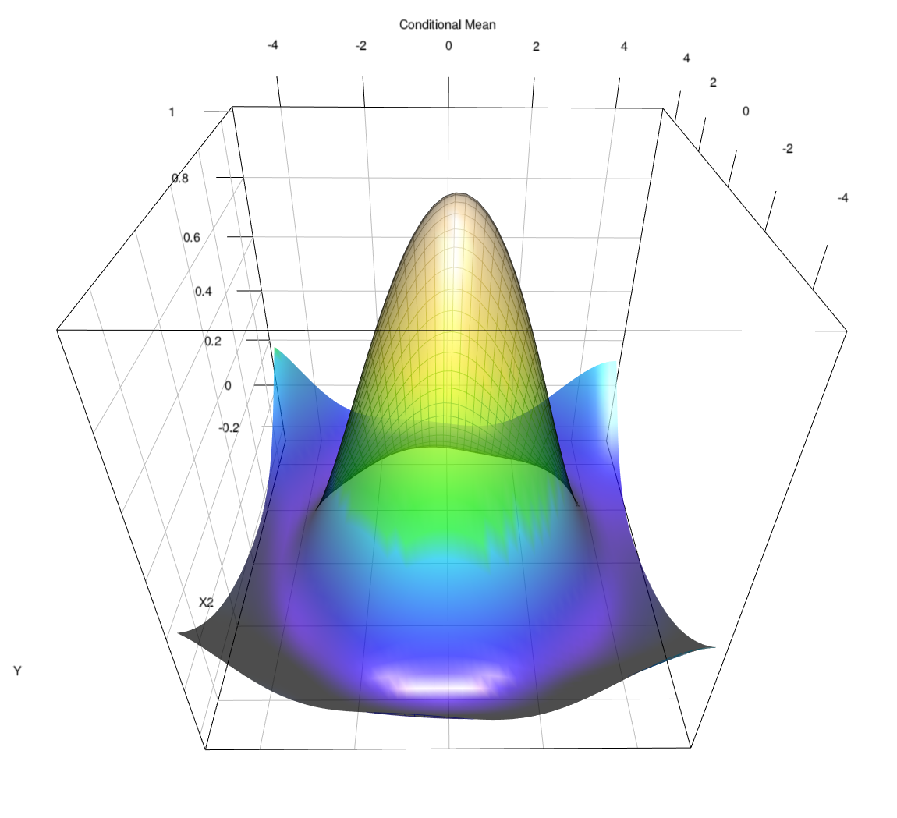

Start Here
Field guide for nonparametric work in R
Gallery of code for np, npRmpi, and crs
This gallery is built to get you from “which package?” to working code quickly. Use it as a practical companion to the package manuals: choose the right tool, copy a small runnable example, and move to longer scripts only when you need them.
np for mixed-data kernels and core serial workflows
npRmpi when the same workflow needs MPI scale
crs for spline and shape-constrained work

A representative spline surface from the gallery archive. The site now treats figures like this as orientation and context, not as a reason to make users download code before they can learn.
This website is linked from my academic site and is meant to help people work, not just read. The default route is now: choose a package, copy a small script, then move into method notes, troubleshooting, and longer examples only as needed.
Start fast
Use the site by task
Choose a Package
Start here if you are deciding between np, npRmpi, and crs, or if you want the shortest route to the right tool.
Install and Get Started
Short install notes, a minimal first run, and pointers for what to do next once the packages are installed.
Quickstarts
Small runnable scripts for np, npRmpi, and crs, shown inline so you can copy directly from the page.
FAQ and Troubleshooting
Common questions, support routes, and links to the current canonical sources.
Method rooms
Learn by method and scale
Kernel Methods
Core workflows for np, together with a clean route to npRmpi when jobs become larger or more time consuming.
MPI and Large Data
Updated guidance for npRmpi, with session mode now treated as the main interactive path rather than an afterthought.
Splines
Spline-focused entry page for crs, including constrained examples and a route into the spline primer.
Kernel Primer
Short conceptual introduction to mixed-data kernels, bandwidth objects, and the basic np workflow.
Density, Distribution, Quantiles
Route to npudens, npudist, npcdens, npcdist, and npqreg workflows.
Semiparametric Models
Partially linear, single-index, and varying-coefficient workflows in one place.
Entropy and Testing
Overview of the entropy-based testing procedures and a small “roll your own” example.
Classification and Modes
Nonparametric classification and conditional-mode workflows, including the birthwt example.
Spline Primer
Conceptual introduction to regression splines, knots, basis functions, and how that connects to crs.
Work with code
Move from snippets to fuller scripts
Worked Examples
Copyable code snippets on the page, plus links to longer scripts when you want the full commented version.
Code Catalog
Broader script library across np, npRmpi, and crs, including older scripts and fuller worked examples beyond the first quickstarts.
Multivariate Regression
Mixed-data regression, partial plots, and prediction using wage1 as a practical first multivariate example.
Books, Papers, and Citation
Pointers to papers, books, and package citations when you want the longer theoretical or bibliographic route.
Need help fast?
Troubleshooting routes
Data Preparation
Variable classes, factors, ordered variables, formulas, and the data-typing mistakes that most often trip people up.
Runtime and Scaling
What to do when cross-validation, bootstrap, spline search, or large jobs become slow or memory-hungry.
Spline Search and Tuning
Practical crs advice on search size, smoothness, knots, and when to narrow the spline search space.
Reference
Task-based routing for function names and common entry points when you know roughly what you need but not where it lives.
Notes
- Search should help if you know the function name but not where it lives.
- Quickstarts is the shortest route to a small runnable script.
- The reference page groups functions by task rather than repeating a long handwritten index.
- Additional materials remain available at jeffreyracine.github.io/research.